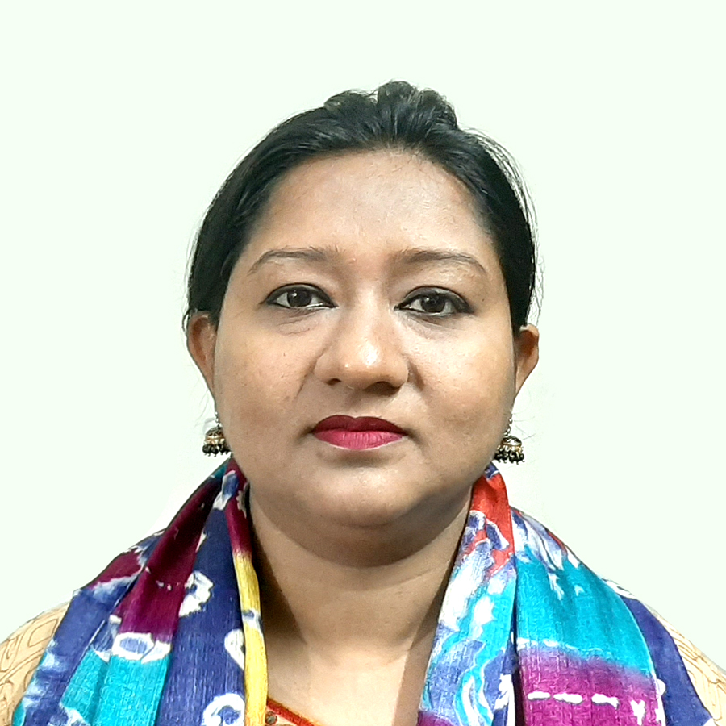

Planner
UDD · Ministry of Housing & Public Works · GoB
A dynamic and qualified urban planner with experience across a wide range of planning projects. Committed to shaping liveable, sustainable cities in Bangladesh and beyond.
Israt Jahan is a Fellow of Bangladesh Institute of Planners (FBIP 729) and a seasoned Urban and Regional Planner currently serving at the Urban Development Directorate (UDD), Ministry of Housing and Public Works, Government of Bangladesh. With over 15 years of professional engagement in the planning field, she brings both academic rigour and practical expertise to her work.
Her academic foundation — a Bachelor's and Master's in Urban and Regional Planning from Jahangirnagar University — gives her a strong grounding in spatial planning theory, research methodology, and applied urban analysis.
She has represented Bangladesh at leading international forums including the World Urban Forum (WUF-9) in Kuala Lumpur and the 1st UN-Habitat Assembly in Nairobi, and has contributed to landmark planning projects including the Dhaka Metropolitan Development Planning (DMDP) Detailed Area Plan and the Khulna Master Plan extension.
Serving as a professional planner within the government's primary urban development arm. Trusted with a broad range of urban and regional planning assignments, contributing to policy formulation, spatial planning, and development facilitation across Bangladesh.
Took on the role of Urban Planning Facilitator, guiding stakeholder engagement, community consultation, and technical planning processes for various urban development initiatives at the local and national levels.
Participated in the world's premier conference on sustainable urbanisation, organised by UN-Habitat, representing Bangladesh's urban planning sector.
Completed an international training programme on strategies for formalising informal settlements, under the Indian Technical and Economic Co-operation (ITEC) scheme.
Attended the inaugural UN-Habitat Assembly, engaging with global urban policy and sustainable development agendas alongside government delegates and urban planning professionals worldwide.
Participated in the Asia-Pacific regional urban forum, engaging in discourse on urban governance, inclusive city development, and regional planning challenges.
Completed specialised training on transport demand modelling tools applicable to rapidly growing urban centres in developing countries.
Training focused on integrating population dynamics and gender considerations into urban and sectoral planning frameworks.
Completed professional training on public procurement regulations and procurement management procedures under the Government of Bangladesh framework.
Advanced data analysis and spreadsheet management training for use in planning research and project monitoring.
Training on implementation monitoring and evaluation, and reporting frameworks used in government-funded development projects.